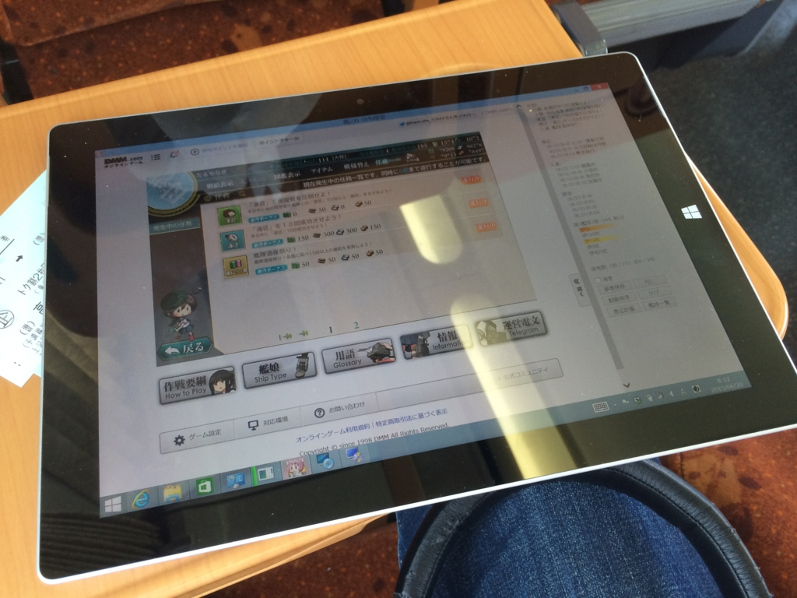
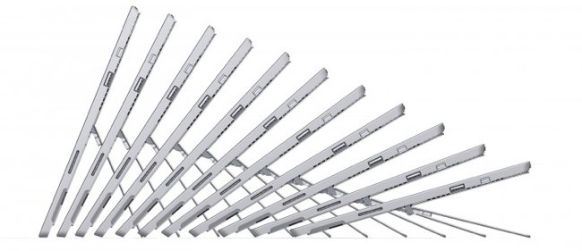
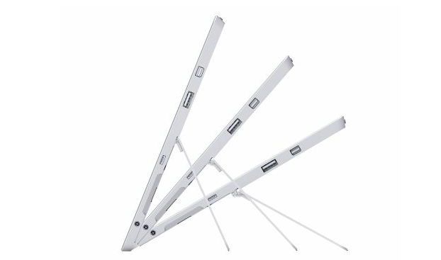
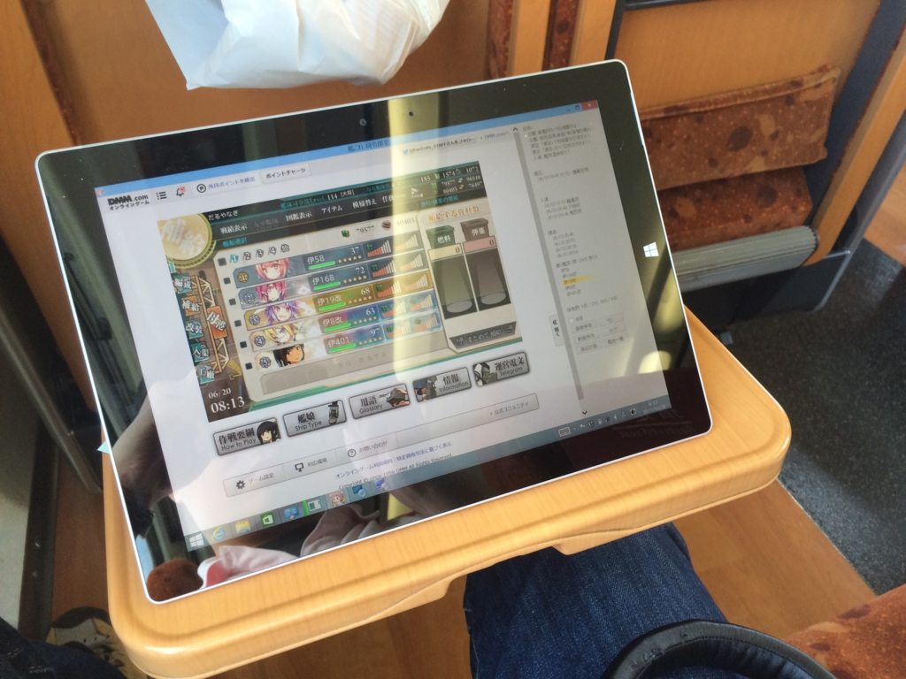
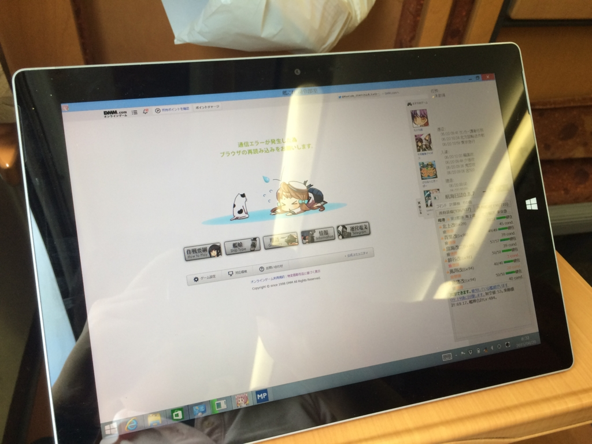
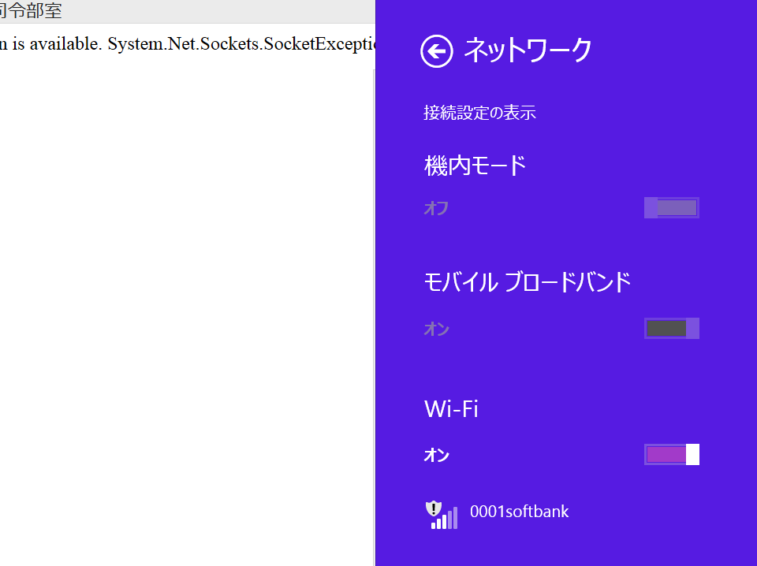

Surface 3：予讃線特急「しおかぜ」で艦これやってみた。
公開日：

先週末、高松へ行く用事があったので、早速 Surface 3 を持ち出してみた。まずは予讃線特急「しおかぜ」で艦これやってみる。
まずは歴代 Surface と比較することで Surface 3 の利点を炙り出してみることにしよう。
Surface 3 vs Surface 2
先代の Surface 2 は軽量でバッテリーの持ちがよく、Flash も動いた。ちょっと非力なきらいはあったけれど、艦これにぴったりな端末だったと言える。けれど、Surface 3 の艦これ適用性はそれをはるかに上回る。
- Intel Atom 搭載：ARM 搭載の Surface 2 では使えなかった x86/x64 の艦これ支援ツールが使える（使うときは自己責任でな）。ちなみに自分は「艦これ司令部室」と「航海日誌」を組み合わせて使っている。動画撮れるのと、データ分析が捗るのがお気に入り。
- LTE 回線搭載：モバイルルーターなしでも気軽にネットに接続できるのは便利だよね！
一方で、バッテリーの持ちには若干の不安を感じる。ストアアプリと違い、デスクトップアプリはリソース管理の甘いアプリケーションが多く、バッテリーを浪費しがち。モバイルではストアアプリの方を優先して使ったり、不要なバックグラウンドアプリケーションを切っておくなどの対策が必要かも。Surface 2 はその点、あんまり意識すべき点がなく、使いやすかった。まぁ、質のよいストアアプリが少ないのは辛かったけれど……。
Surface 3 vs Surface Pro 3
ぶっちゃけていってしまえば、Surface 3 は Surface Pro 3 の性能劣化版。だけど、あえて Surface 3 を選ぶ理由は十分あると思った。
- 発熱が少ない：Surface Pro 3 は膝に乗っけたり、お布団の中で使い気がまったく起こらない端末だった（冬に布団の中を温めるときには便利）。
- 薄い・軽い・小さい：重さはざっと 2/3 ぐらいに感じるかな（調べたら Pro 3 は公称 800g、3 は 641g。2 の 676g と比べてもわずかに軽い）。一回り小さいので、鞄に余裕ができたのもうれしい（Surface Pro 3 が入るボディバッグ - だるろぐ）
- LTE 回線搭載：モバイルルーターなしでも（略
ただ、やっぱりピークパワーに不足を感じる。まぁ、アプリのコンパイルとかヘヴィなゲームはデスクトップでやれって話なんだけど、「これさえあれば、なにもいらない」なんだから全部れこれでやっちまいたい！ ってついつい思っちゃうんだよねぇ。
あと、地味に残念なのはキックスタンド。もう一段階、深い角度がほしかった。


Surface Pro 3 のキックスタンド、無段階に調整できる事にはそれほどメリットを感じなかったんだけど、一番深い角度は地べたに置いてお絵かきにちょうど良かったんだよなぁ。

艦これやる時も、もう少し角度が深いとよいのになぁ、と感じた。まぁ、あんまり角度が深いのも、そのままベコッって押し潰してしまわないか不安ではあるんだけど。
でも、予讃線特急で艦これするには無理があった。

松山を出て、もぐもぐと駅弁食べたあと、もそもそと Surface 3 をとりだして艦これを始めたが、今治を過ぎる辺りまでは割と快適に楽しめた。しかし、午前の演習任務をすべてこなし、遠征に送り出して、いざデイリーの出撃任務をやろうかな、と思ったところで回線が切れてアウト。まぁ、これはしょうがないかな、田舎だしな。
あと、「しおかぜ」は振動がキツくて、ちゃんと両手で Surface 3 をホールドしないとタッチどころじゃなくなるということもしばしば。新幹線だったら問題ないんだろうけど、在来線特急ではちょっとツラいところあるなぁ。

結局、大人しく本でも読んでる方がよっぽどいいと気付き、西条辺りで Surface 3 を閉じた。あまりにも回線が不安定なところで使ったり、モバイルネットワークの ON/OFF を繰り返すとドライバーの調子まで悪くなるのだろうか、OS を再起動しないと電波を掴んでくれなくなることもあり、ちょっとストレスが溜まったのもある。
結論： 移動中の艦これはちょっとキツい。出先でちょろっとやるにはイイけれど。
宿で艦これしようとして失敗した。
というわけで、艦これは宿でのんびりすることにしたのだけど、これまた失敗だった。
Surface 3 はこれまでの Surface と違って USB ケーブルで給電できる。スマートフォンのケーブルを使いまわせるので、これはこれで結構なことなのだけど、充電器まで使いまわせると思ってしまったのが今回の誤り。

【2011年モデル】ELECOM 電源タップ USB充電ポート付 iPhone/スマートフォン対応 1個口 2ポート ホワイト T-UHS01-12200WH
- 出版社/メーカー: エレコム
- 発売日: 2011/07/28
- メディア: Personal Computers
- 購入: 4人 クリック: 12回
- この商品を含むブログを見る
自分は旅行用に ELECOM の安い電源タップを使っているのだけど（安くて小さくて割と使い勝手がいい）、これでは Surface 3 を充電できなかったのだ／(＾o＾)＼
より正確にいうと、この子には Smartphone 用と iPhone 用の USB ポートがあるのだけど、
- Smartphone 用の USB ポートに挿したところ、充電されなかった
- iPhone 用の USB ポートに挿したところ、スリープ状態だと充電されるが、艦これで遊んでると 充電＜消費 になるみたいで、やがてバッテリーが尽きる
みたいな感じ。仕様を見ると「DC5.1V/合計2100mA」（各ポート 1A みたい。Smartphone 用と iPhone 用の違いは文系だしよくわからん）と書いてあったのだけど、Surface 3 の充電は 2.5A 必要みたいでだいぶ足りなかった。
教訓： 専用充電器はかならずもって行きましょう。
この ELECOM の電源タップは気に入っているので、もし Surface 3 に対応する新版が出たらまた買いたいと思う。
あと、電波の感度はケータイよりも悪いみたいで、iPhone 5s（Softbank）や Nexus 6（ワイモバイル）で電波を掴めているのに、Surface 3 ではダメというパターンがたまに見られた。Nesus 6 で大丈夫なのでキャリアの電波が弱いということではないみたいなのだけど……。この辺りはファームウェアアップデートで改善されるのかな？ せっかく SIM 挿せるのにスマートフォンのテザリング使ってるんじゃ間抜けだからなぁ。
他にもいろいろあったけど、今回はこの辺りで。いろいろ失敗が多かったけど、次の旅行ではもう少しまともに運用できるはず（たぶん